Ikoma, Nara: things to do, food and stays
Ikoma · Nara
Ikoma
Highlighted on the Nara map.
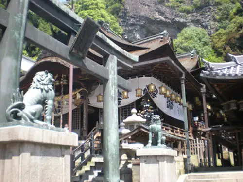
Stay
観光旅館やまと
Kanko Ryokan Yamato
生駒のお宿城山旅館
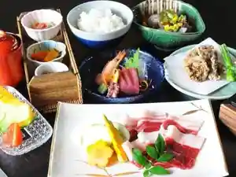
Ikoma No Yado Shiroyama Ryokan
Ryokan inn in Monzen, Ikoma with kaiseki dinners.
カンナビ イコマヤマホテル
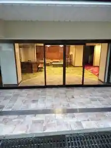
Kannabi Ikomayama Hotel
門前おかげ楼
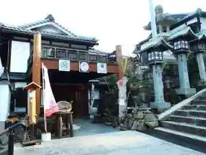
Monzen Okage Ro
Inn in Monzen, Ikoma with breakfast available.
古民家コテージ 鹿音 Ｋａｎｏｎ
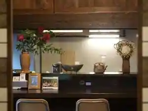
Ko Minka Cottage Shika Oto Kanon
Cottages in Yuri, Ikoma with pet-friendly rooms and a renovated traditional house.
Dining
きみや
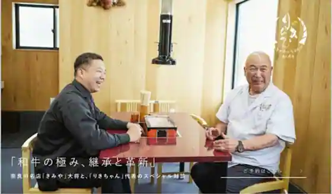
Kimiya
山岡ピザ
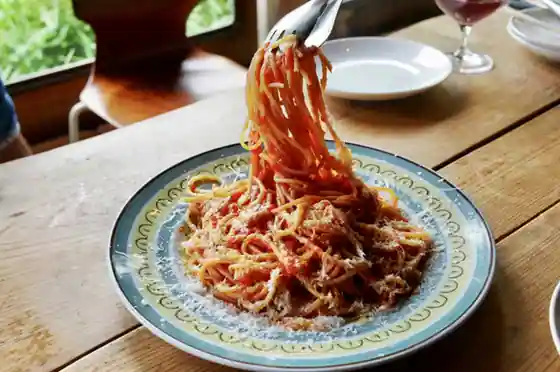
Yamaoka Pizza
きのこ料理 創士庵
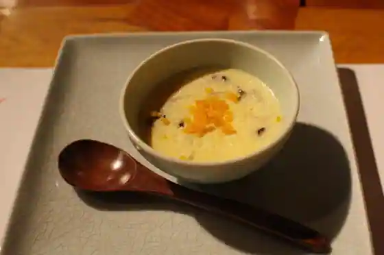
Kinoko Ryori Soji Iori
らぁめん トリカヂ イッパイ
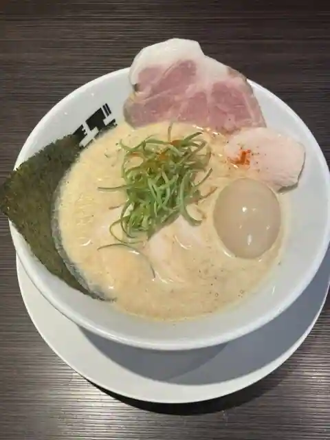
Ramen Torikaji Ippai
ア・ヴォートル・サンテ
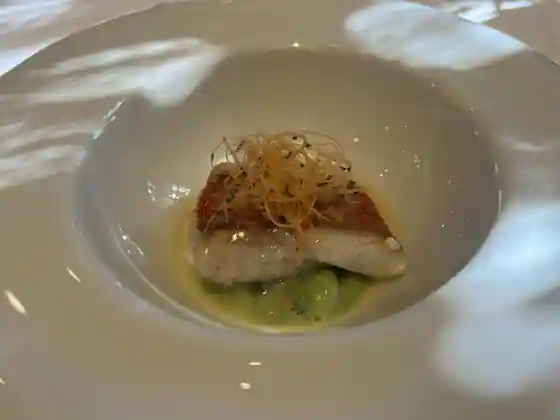
A Votoru Sante
森のレストラン ラッキーガーデン
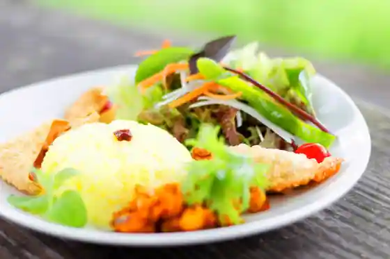
Mori No Restaurant Rakki Garden
高山製菓
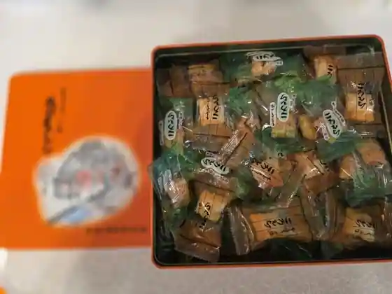
Kozan Seika
川端風太朗
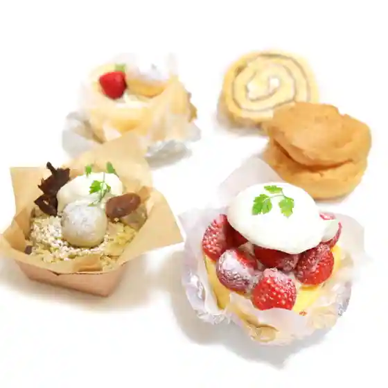
Kawabata Futa Akira
麺屋 もりき 生駒
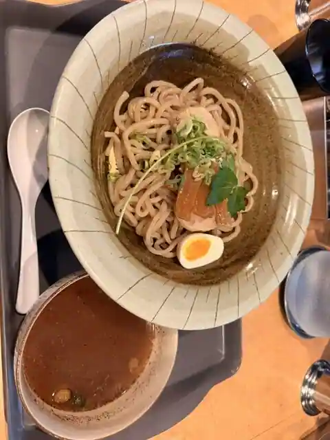
Men Ya Moriki Ikoma
音の花温泉 音の花亭
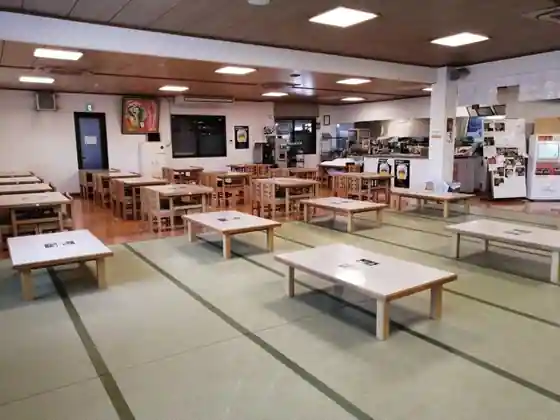
Oto No Hana Onsen Oto No Hana Tei
アルション 東生駒本店
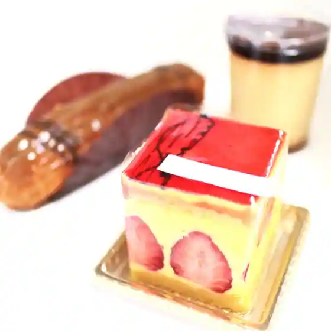
Arushon Haruo Koma Hon
カレイヤー
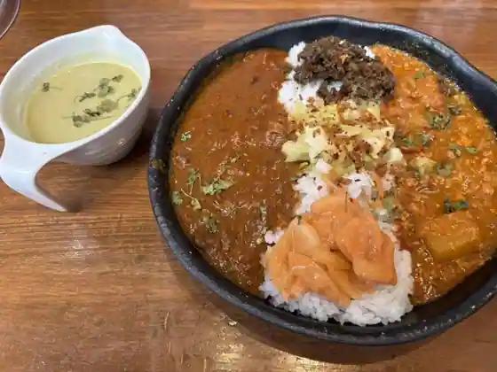
Kareiya
摩波楽茶屋
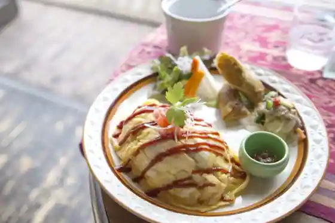
Ma Nami Raku Chaya
ラーメン壷 東生駒店
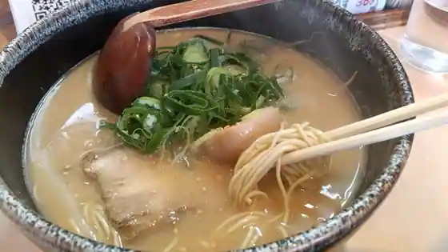
Ramen Tsubo Haruo Koma
スーリール ダンジュ 本店
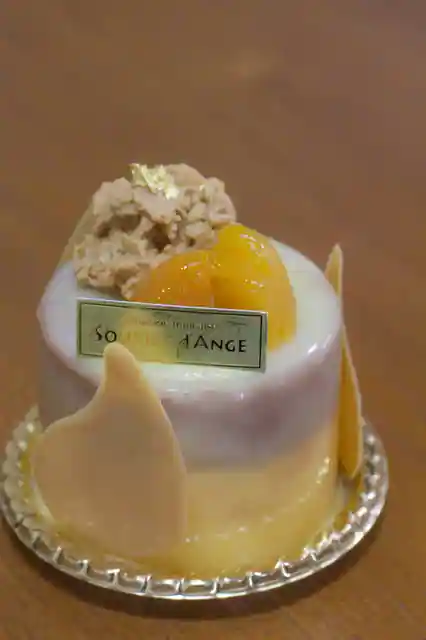
Suriru Danju Hon
パン工房 西山荘
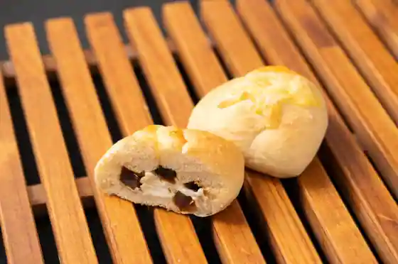
Bakery Kobo Nishiyama So
ナイヤビンギ
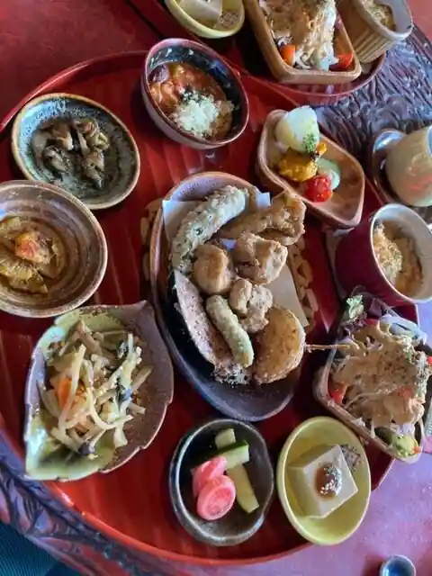
Naiyabingi
そば処 山の神
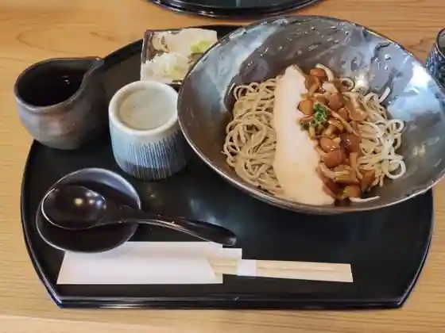
Soba Tokoro Yama No Kami
甘味 イコマヤ
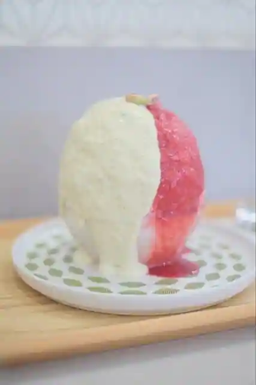
Amami Ikomaya
まるかつ 生駒店
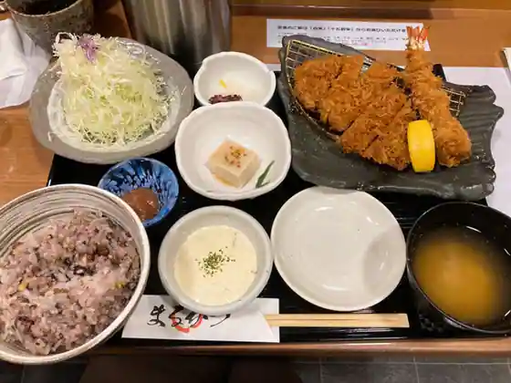
Marukatsu Ikoma
いな田
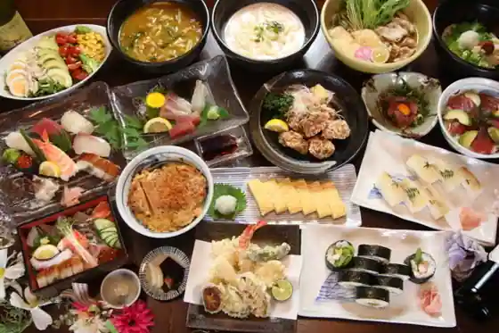
Ina Ta
山の音
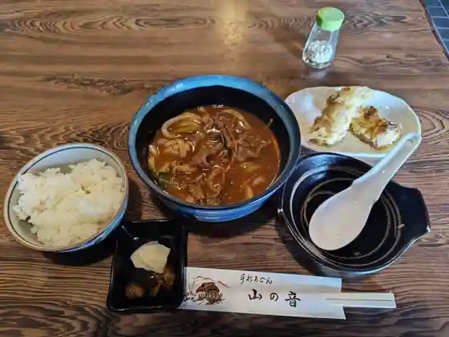
Yama No Oto
肉割烹 NIKUZO 藤起
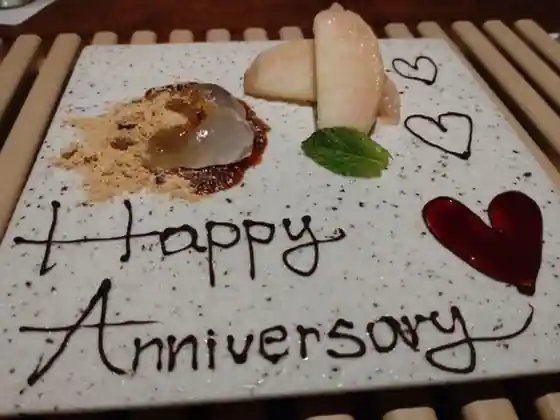
Niku Kappo NIKUZO Fuji Ki
ふらんす料理 蓮
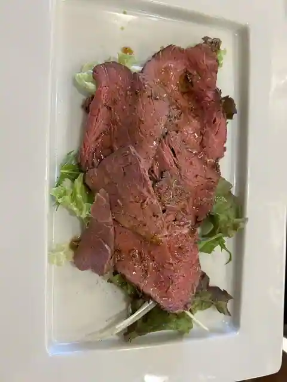
Furansu Ryori Hasu
Sights
Hozan Tera
Ikoma Yamagami Amusement Park
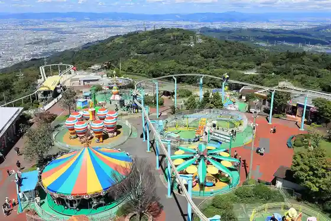
Kozan Chikurin Sono
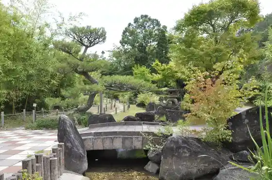
O Uma Taisha
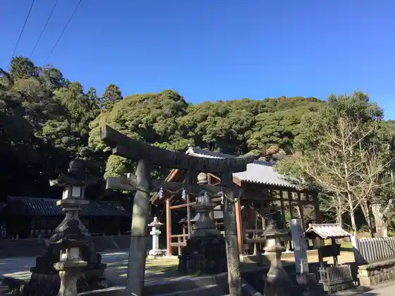
Chokyu Tera
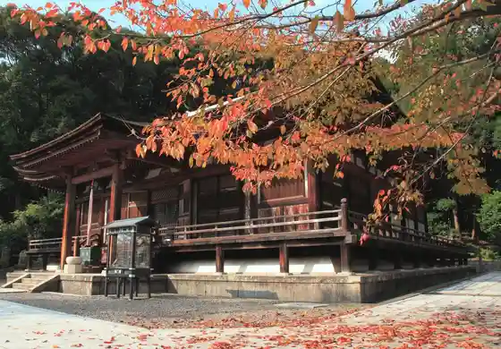
Ikoma Sanroku Park
Ikoma Furusato Museum